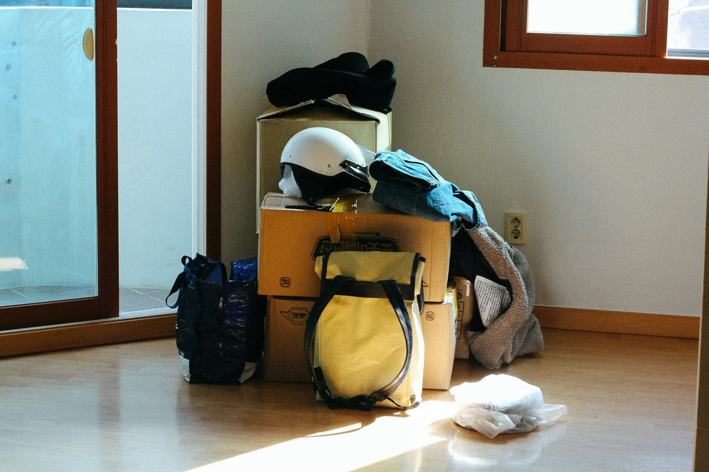

搬家，是整理家當也是整理自己
卡在一座城市裡
到台北讀書，一待就超過 10 年，一共住過 3 個地方。
生活在這座城市理所當然長出了一些生活習慣與連結，比如可以工作的咖啡廳、喜歡的午茶點心、夜間散步的河堤，在日復一日的生活裡，不再像年輕小夥子一樣到處嘗鮮，累積了一些口袋名單或行程可以選擇，當然，如果想要也永遠有新鮮事可以嘗試。
養成的習慣或許也成了一個結，不見得喜歡這座城市（儘管她有許多「優勢和好處」），卻也捨不得離開，然而捨不得的恐怕不是城市本身，而是在這裡所建立的關係、回憶、習慣，離開似乎就意味著放棄以及重新來過。
突然想起C與交往數十年的對象分手，我們聊起選擇滷肉飯和帝王蟹的事情，旁人看不懂她為什麼要放開「帝王蟹」，因為帝王蟹再怎麼高級、美味，永遠也給不了滷肉飯的平凡但暖心。雖然相較之下，大家不見得都覺得台北是帝王蟹啦，畢竟台北不是會養你、讓你生活無虞的的帝王啊！
「離開」真正成為一個選項
而突然長出了「到哪裡都可以」的心情，是源自於這兩年自由工作、出國短居的經驗，相對頻繁地回老家，在歐洲幾次的飛來飛去、被鼓勵到國外工作，突然察覺到交通移動、來去的容易，才覺得移居他地也該是容易的。（或許因為疫情、在家工作變得普遍也推了一把吧！）
也在這個時候，突然自己戳破了自己的謊言，本來認為自己對任何事都是願意開放心胸大聲說「任何機會我都願意嘗試！」的人，才知道一直沒有把「離開台北」當作一個可以選的選項認真看待，直到現在。
在一個機緣之下，這一次要搬到車程 1 小時外的新竹了！
整理家當也是一種贖罪
過去一次搬家的距離不遠（步行10分鐘），又是繼續和室友同住，可想而知便是找搬家公司、原封不動地搬過去。這次因為要搬到外縣市，斷捨離成了必然，才發現整理家當是一個多麼艱難、耗費心神的工作，也是一種贖罪，贖每一次決定「要丟還是要留」時，卻選擇了逃避、先不處理的罪……。
不過有趣之處也在這斷捨離的過程，得以重新審視重要事物的先後順序，比如面對我的廚房用具，就會很清楚知道「我還需要他們」；面對書籍時（約150本？），對大多數書呈現了難以割捨的狀態，最終在友人直球詢問「你認真想一想，你真的需要這本書嗎？」的情況下，最終送／賣出約100本。
而需要斷捨離的，也不只是物質的。
「我該把我的透明水彩與色鉛筆送出嗎？」
潛台詞是：「我是否該和某一個時期的自己說再見了？那個曾經喜歡畫畫的自己。」將他們割捨，彷彿是切斷未來與畫畫的所有連結一樣，真的是非常難以決定。
送掉了很多也獲得很多
以前參與過幾次的免廢市集，曾贈物過也曾索取過，然而每次都會碰到一些搶物的情況，即使明白「贈出就不該執著」，仍然無法放下不舒服的感受。
這次在時間有點緊縮、慌忙與精神疲勞下，仍然決定替二手物品一個一個拍照、po文、約定面交時間，希望即使不能期待物品最終被如何使用，起碼在贈送時的感受可以好一些——索取者願意特別前來，就是一種誠意了吧？
最後大概交易了十幾位，所幸都是客氣、友善的，甚至有數位來面交時帶了禮物、後續回饋了使用心得，這些都讓人心裡感覺好非常非常多。
關於下一次搬家
好不容易才搬家、安頓好不久，最近卻意外談起了來年的工作，雖然一切尚未塵埃落定，但似乎預言著在不遠的將來再次搬家的可能，隨工作游牧遂而「成為一個選項」。
下一次搬家前，我有辦法捨去更多身外物、讓一切輕量化，留下更精煉、重要的部分嗎？到時候的自己，對人生的方向也會更加明晰嗎？

留言
電子郵件不會公開，只用來辨識留言者。第一次留言會先經過審核，之後同一個電子郵件的留言會直接顯示。本留言區以 Cloudflare Turnstile 防止垃圾留言。